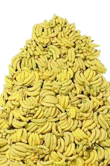

What type of monkey is best?
Did you ever hear the tragedy of Darth Monkius The Wise? I thought not. It’s not a story the Jedi would tell you. It’s a Sith legend. Darth Monkius was a Dark Lord of the Banana, so powerful and so wise he could use it to influence the jungle to create more bananas… He had such a knowledge of the Banana that he could even keep the ones he cared about from starving. The Monkey side of the Force is a pathway to many abilities some consider to be unnatural. He became so powerful… the only thing he was afraid of was losing his bananas, which eventually, of course, he did. Unfortunately, he taught his apprentice everything he knew, then his apprentice stole his bananas in his sleep. Ironic. He could gift others bananas, but not himself.
